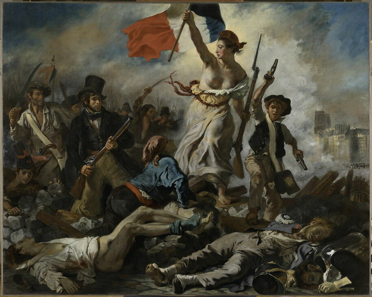

Eugène Delacroix, Le 28 juillet 1830. La Liberté guidant le peuple
1830 · huile sur toile · 260 × 325 cm · musée du Louvre, Paris
1830 · huile sur toile · 260 × 325 cm · musée du Louvre, Paris
Touche un repère numéroté pour entrer dans le tableau. Flèches ← → pour avancer, Échap pour ressortir.